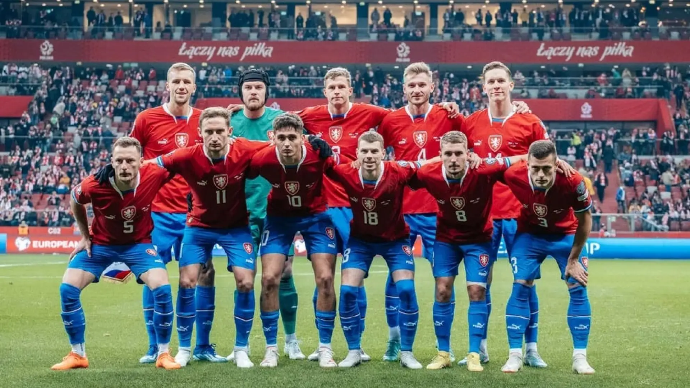

Seleção da Chéquia na UEFA Eurocopa
seleção da Tchecoslováquia existiu até 1993, quando se deu a separação desse país em duas repúblicas: a Chéquia e a Eslováquia. A seleção Chéquia vem com o sonho de vencer seu primeiro titulo agora como país independente, com a liderança de Patrick Schick, jogador do campeão alemão Bayer Leverkusen e Tomás Soucek do West Ham, entre outros.
